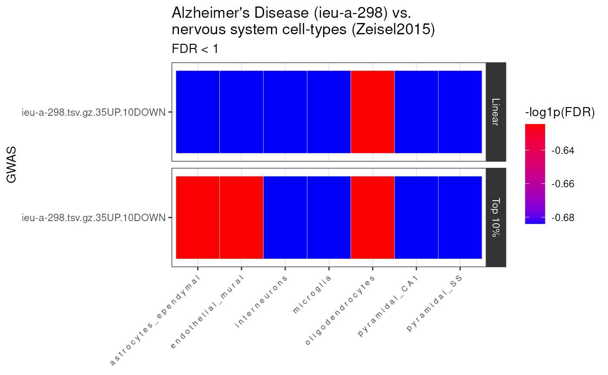

vignettes/MAGMA.Celltyping.Rmd
MAGMA.Celltyping.RmdMAGMA.Celltyping is a software package that facilitates conducting cell-type-specific enrichment tests on GWAS summary statistics.
Specify where you want the large files to be downloaded to.
NOTE: Make sure you change storage_dir to somewhere other than tempdir() if you want to make sure the results aren’t deleted after this R session closes!
storage_dir <- tempdir()get_example_gwas().Here we provide a pre-munged version of the above file.
Our lab have created MungeSumstats, a robust Bioconductor package for formatting multiple types of summary statistics files. We highly recommend processing your GWAS summary statistics with MungeSumstats before continuing. See the full_workflow vignette for more details.
The minimum info needed after munging is:
- “SNP”, “CHR”, and “BP” as first three columns. - It has at least one of these columns: “Z”,“OR”,“BETA”,“LOG_ODDS”,“SIGNED_SUMSTAT”
path_formatted <- MAGMA.Celltyping::get_example_gwas(
trait = "prospective_memory")Note you can input the genome build of your summary statistics for this step or it can be inferred if left NULL:
genesOutPath <- MAGMA.Celltyping::map_snps_to_genes(
path_formatted = path_formatted,
genome_build = "GRCh37")Rather than preprocessing the GWAS yourself, you can instead use the MAGMA_Files_Public database we have created. It contains pre-computed MAGMA SNP-to-genes mapping files for hundreds of GWAS.
You can browse which GWAS traits are available by looking at the provided metadata.csv file.
magma_dirs <- MAGMA.Celltyping::import_magma_files(ids = "ieu-a-298")## Using built-in example files: ieu-a-298.tsv.gz.35UP.10DOWN## Returning MAGMA directories.ewceData provides a number of CellTypeDatasets (CTD) to be used a cell-type transcriptomic signature reference files.
If you want to create your own single-cell transcriptomic reference, you’ll need to first convert it to CTD using the instructions found in the EWCE package documentation here.
ctd <- ewceData::ctd()## snapshotDate(): 2022-01-20## see ?ewceData and browseVignettes('ewceData') for documentation## loading from cacheNote that the cell type dataset loaded in the code above is the Karolinksa cortex/hippocampus data only. For the full Karolinska dataset with hypothalamus and midbrain instead use the following:
ctd <- MAGMA.Celltyping::get_ctd("ctd_allKI")Or for the DRONC seq or AIBS datasets use:
ctd <- get_ctd("ctd_Tasic")
ctd <- get_ctd("ctd_DivSeq")
ctd <- get_ctd("ctd_AIBS")
ctd <- get_ctd("ctd_DRONC_human")
ctd <- get_ctd("ctd_DRONC_mouse")
ctd <- get_ctd("ctd_BlueLake2018_FrontalCortexOnly")
ctd <- get_ctd("ctd_BlueLake2018_VisualCortexOnly")
ctd <- get_ctd("ctd_Saunders")MAGMA.Celltyping offers a suite of functions for conducting various types of cell-type-specific enrichment tests on GWAS summary statistics.
The celltype_associations_pipeline wraps several functions that in previous versions of MAGMA.Celltyping had to be set up and run separately. These include:
calculate_celltype_associations(EnrichmentMode = "linear") internally. Activated when run_linear=TRUE.calculate_celltype_associations(EnrichmentMode = "Top 10%") internally. Activated when run_top10=TRUE.calculate_conditional_celltype_associations internally. Activated when run_conditional=TRUE.Thus, celltype_associations_pipeline is designed to make these analyses easier to run.
MAGMA_results <- MAGMA.Celltyping::celltype_associations_pipeline(
magma_dirs = magma_dirs,
ctd = ctd,
ctd_species = "mouse",
ctd_name = "Zeisel2015",
run_linear = TRUE,
run_top10 = TRUE)We’ve also saved a pre-computed version of these results as a dataset:
MAGMA_results <- MAGMA.Celltyping::enrichment_resultsmerge_results imports each of the MAGMA enrichment results files and merges them into one so that they can easily be plotted and further analysed.
merged_results <- MAGMA.Celltyping::merge_results(
MAGMA_results = MAGMA_results)## Saving full merged results to ==> /tmp/Rtmp3qumIa/MAGMA_celltyping..lvl1.csv
knitr::kable(merged_results)| GWAS | Celltype | OBS_GENES | BETA | BETA_STD | SE | P | level | Method | GCOV_FILE | CONTROL | CONTROL_label | log10p | genesOutCOND | EnrichmentMode | FDR | Celltype_id |
|---|---|---|---|---|---|---|---|---|---|---|---|---|---|---|---|---|
| finn-a-AD.tsv.gz.35UP.10DOWN | i n t e r n e u r o n s | 11809 | 0.0012211 | 0.0143570 | 0.0006699 | 0.034171 | 1 | MAGMA | finn-a-AD.tsv.gz.35UP.10DOWN.level1.Zeisel2015_linear.gsa.out | BASELINE | BASELINE | -1.4663423 | NA | Linear | 0.1943643 | interneurons |
| finn-a-AD.tsv.gz.35UP.10DOWN | p y r a m i d a l _ C A 1 | 11809 | 0.0010366 | 0.0120100 | 0.0006865 | 0.065539 | 1 | MAGMA | finn-a-AD.tsv.gz.35UP.10DOWN.level1.Zeisel2015_linear.gsa.out | BASELINE | BASELINE | -1.1835002 | NA | Linear | 0.1943643 | pyramidal_CA1 |
| finn-a-AD.tsv.gz.35UP.10DOWN | p y r a m i d a l _ S S | 11809 | 0.0009264 | 0.0108780 | 0.0006697 | 0.083299 | 1 | MAGMA | finn-a-AD.tsv.gz.35UP.10DOWN.level1.Zeisel2015_linear.gsa.out | BASELINE | BASELINE | -1.0793602 | NA | Linear | 0.1943643 | pyramidal_SS |
| finn-a-AD.tsv.gz.35UP.10DOWN | m i c r o g l i a | 260 | 0.1015100 | 0.0119480 | 0.0512870 | 0.023904 | 1 | MAGMA | finn-a-AD.tsv.gz.35UP.10DOWN.level1.Zeisel2015_top10.gsa.out | BASELINE | BASELINE | -1.6215294 | NA | Top 10% | 0.1943643 | microglia |
| finn-a-AD.tsv.gz.35UP.10DOWN | p y r a m i d a l _ C A 1 | 290 | 0.0713330 | 0.0088599 | 0.0484960 | 0.070669 | 1 | MAGMA | finn-a-AD.tsv.gz.35UP.10DOWN.level1.Zeisel2015_top10.gsa.out | BASELINE | BASELINE | -1.1507711 | NA | Top 10% | 0.1943643 | pyramidal_CA1 |
| finn-a-AD.tsv.gz.35UP.10DOWN | p y r a m i d a l _ S S | 289 | 0.0764730 | 0.0094821 | 0.0487460 | 0.058356 | 1 | MAGMA | finn-a-AD.tsv.gz.35UP.10DOWN.level1.Zeisel2015_top10.gsa.out | BASELINE | BASELINE | -1.2339145 | NA | Top 10% | 0.1943643 | pyramidal_SS |
| finn-a-AD.tsv.gz.35UP.10DOWN | i n t e r n e u r o n s | 11809 | 0.0012211 | 0.0143570 | 0.0006699 | 0.034171 | 1 | MAGMA | finn-a-AD.tsv.gz.35UP.10DOWN.level1.Zeisel2015_linear.gsa.out | BASELINE | BASELINE | -1.4663423 | NA | Linear | 0.1943643 | interneurons |
| finn-a-AD.tsv.gz.35UP.10DOWN | p y r a m i d a l _ C A 1 | 11809 | 0.0010366 | 0.0120100 | 0.0006865 | 0.065539 | 1 | MAGMA | finn-a-AD.tsv.gz.35UP.10DOWN.level1.Zeisel2015_linear.gsa.out | BASELINE | BASELINE | -1.1835002 | NA | Linear | 0.1943643 | pyramidal_CA1 |
| finn-a-AD.tsv.gz.35UP.10DOWN | p y r a m i d a l _ S S | 11809 | 0.0009264 | 0.0108780 | 0.0006697 | 0.083299 | 1 | MAGMA | finn-a-AD.tsv.gz.35UP.10DOWN.level1.Zeisel2015_linear.gsa.out | BASELINE | BASELINE | -1.0793602 | NA | Linear | 0.1943643 | pyramidal_SS |
| finn-a-AD.tsv.gz.35UP.10DOWN | m i c r o g l i a | 260 | 0.1015100 | 0.0119480 | 0.0512870 | 0.023904 | 1 | MAGMA | finn-a-AD.tsv.gz.35UP.10DOWN.level1.Zeisel2015_top10.gsa.out | BASELINE | BASELINE | -1.6215294 | NA | Top 10% | 0.1943643 | microglia |
| finn-a-AD.tsv.gz.35UP.10DOWN | p y r a m i d a l _ C A 1 | 290 | 0.0713330 | 0.0088599 | 0.0484960 | 0.070669 | 1 | MAGMA | finn-a-AD.tsv.gz.35UP.10DOWN.level1.Zeisel2015_top10.gsa.out | BASELINE | BASELINE | -1.1507711 | NA | Top 10% | 0.1943643 | pyramidal_CA1 |
| finn-a-AD.tsv.gz.35UP.10DOWN | p y r a m i d a l _ S S | 289 | 0.0764730 | 0.0094821 | 0.0487460 | 0.058356 | 1 | MAGMA | finn-a-AD.tsv.gz.35UP.10DOWN.level1.Zeisel2015_top10.gsa.out | BASELINE | BASELINE | -1.2339145 | NA | Top 10% | 0.1943643 | pyramidal_SS |
| finn-a-AD.tsv.gz.35UP.10DOWN | o l i g o d e n d r o c y t e s | 293 | 0.0311950 | 0.0038943 | 0.0497550 | 0.265340 | 1 | MAGMA | finn-a-AD.tsv.gz.35UP.10DOWN.level1.Zeisel2015_top10.gsa.out | BASELINE | BASELINE | -0.5761973 | NA | Top 10% | 0.5306800 | oligodendrocytes |
| finn-a-AD.tsv.gz.35UP.10DOWN | o l i g o d e n d r o c y t e s | 293 | 0.0311950 | 0.0038943 | 0.0497550 | 0.265340 | 1 | MAGMA | finn-a-AD.tsv.gz.35UP.10DOWN.level1.Zeisel2015_top10.gsa.out | BASELINE | BASELINE | -0.5761973 | NA | Top 10% | 0.5306800 | oligodendrocytes |
| finn-a-AD.tsv.gz.35UP.10DOWN | a s t r o c y t e s _ e p e n d y m a l | 284 | 0.0159080 | 0.0019556 | 0.0492120 | 0.373250 | 1 | MAGMA | finn-a-AD.tsv.gz.35UP.10DOWN.level1.Zeisel2015_top10.gsa.out | BASELINE | BASELINE | -0.4280002 | NA | Top 10% | 0.6531875 | astrocytes_ependymal |
| finn-a-AD.tsv.gz.35UP.10DOWN | a s t r o c y t e s _ e p e n d y m a l | 284 | 0.0159080 | 0.0019556 | 0.0492120 | 0.373250 | 1 | MAGMA | finn-a-AD.tsv.gz.35UP.10DOWN.level1.Zeisel2015_top10.gsa.out | BASELINE | BASELINE | -0.4280002 | NA | Top 10% | 0.6531875 | astrocytes_ependymal |
| finn-a-AD.tsv.gz.35UP.10DOWN | a s t r o c y t e s _ e p e n d y m a l | 11809 | -0.0000893 | -0.0010659 | 0.0006559 | 0.554160 | 1 | MAGMA | finn-a-AD.tsv.gz.35UP.10DOWN.level1.Zeisel2015_linear.gsa.out | BASELINE | BASELINE | -0.2563648 | NA | Linear | 0.7638867 | astrocytes_ependymal |
| finn-a-AD.tsv.gz.35UP.10DOWN | m i c r o g l i a | 11809 | -0.0002481 | -0.0030903 | 0.0006231 | 0.654760 | 1 | MAGMA | finn-a-AD.tsv.gz.35UP.10DOWN.level1.Zeisel2015_linear.gsa.out | BASELINE | BASELINE | -0.1839179 | NA | Linear | 0.7638867 | microglia |
| finn-a-AD.tsv.gz.35UP.10DOWN | o l i g o d e n d r o c y t e s | 11809 | -0.0001820 | -0.0021308 | 0.0006861 | 0.604610 | 1 | MAGMA | finn-a-AD.tsv.gz.35UP.10DOWN.level1.Zeisel2015_linear.gsa.out | BASELINE | BASELINE | -0.2185247 | NA | Linear | 0.7638867 | oligodendrocytes |
| finn-a-AD.tsv.gz.35UP.10DOWN | e n d o t h e l i a l _ m u r a l | 282 | -0.0127510 | -0.0015621 | 0.0481600 | 0.604410 | 1 | MAGMA | finn-a-AD.tsv.gz.35UP.10DOWN.level1.Zeisel2015_top10.gsa.out | BASELINE | BASELINE | -0.2186684 | NA | Top 10% | 0.7638867 | endothelial_mural |
| finn-a-AD.tsv.gz.35UP.10DOWN | a s t r o c y t e s _ e p e n d y m a l | 11809 | -0.0000893 | -0.0010659 | 0.0006559 | 0.554160 | 1 | MAGMA | finn-a-AD.tsv.gz.35UP.10DOWN.level1.Zeisel2015_linear.gsa.out | BASELINE | BASELINE | -0.2563648 | NA | Linear | 0.7638867 | astrocytes_ependymal |
| finn-a-AD.tsv.gz.35UP.10DOWN | m i c r o g l i a | 11809 | -0.0002481 | -0.0030903 | 0.0006231 | 0.654760 | 1 | MAGMA | finn-a-AD.tsv.gz.35UP.10DOWN.level1.Zeisel2015_linear.gsa.out | BASELINE | BASELINE | -0.1839179 | NA | Linear | 0.7638867 | microglia |
| finn-a-AD.tsv.gz.35UP.10DOWN | o l i g o d e n d r o c y t e s | 11809 | -0.0001820 | -0.0021308 | 0.0006861 | 0.604610 | 1 | MAGMA | finn-a-AD.tsv.gz.35UP.10DOWN.level1.Zeisel2015_linear.gsa.out | BASELINE | BASELINE | -0.2185247 | NA | Linear | 0.7638867 | oligodendrocytes |
| finn-a-AD.tsv.gz.35UP.10DOWN | e n d o t h e l i a l _ m u r a l | 282 | -0.0127510 | -0.0015621 | 0.0481600 | 0.604410 | 1 | MAGMA | finn-a-AD.tsv.gz.35UP.10DOWN.level1.Zeisel2015_top10.gsa.out | BASELINE | BASELINE | -0.2186684 | NA | Top 10% | 0.7638867 | endothelial_mural |
| finn-a-AD.tsv.gz.35UP.10DOWN | e n d o t h e l i a l _ m u r a l | 11809 | -0.0006254 | -0.0075750 | 0.0006451 | 0.833860 | 1 | MAGMA | finn-a-AD.tsv.gz.35UP.10DOWN.level1.Zeisel2015_linear.gsa.out | BASELINE | BASELINE | -0.0789069 | NA | Linear | 0.8980031 | endothelial_mural |
| finn-a-AD.tsv.gz.35UP.10DOWN | e n d o t h e l i a l _ m u r a l | 11809 | -0.0006254 | -0.0075750 | 0.0006451 | 0.833860 | 1 | MAGMA | finn-a-AD.tsv.gz.35UP.10DOWN.level1.Zeisel2015_linear.gsa.out | BASELINE | BASELINE | -0.0789069 | NA | Linear | 0.8980031 | endothelial_mural |
| finn-a-AD.tsv.gz.35UP.10DOWN | i n t e r n e u r o n s | 287 | -0.0645100 | -0.0079715 | 0.0472000 | 0.914140 | 1 | MAGMA | finn-a-AD.tsv.gz.35UP.10DOWN.level1.Zeisel2015_top10.gsa.out | BASELINE | BASELINE | -0.0389873 | NA | Top 10% | 0.9141400 | interneurons |
| finn-a-AD.tsv.gz.35UP.10DOWN | i n t e r n e u r o n s | 287 | -0.0645100 | -0.0079715 | 0.0472000 | 0.914140 | 1 | MAGMA | finn-a-AD.tsv.gz.35UP.10DOWN.level1.Zeisel2015_top10.gsa.out | BASELINE | BASELINE | -0.0389873 | NA | Top 10% | 0.9141400 | interneurons |
Now we’ll construct a heatmap visualizing the enrichment results, such that each GWAS is shown on the y-axis and each cell-type is shown on the x-axis. Results can be further facetted by what kind of test was run (linear, top10%, and/or conditional).
heat <- MAGMA.Celltyping::results_heatmap(
merged_results = merged_results,
title = "Alzheimer's Disease (ieu-a-298) vs. nervous system cell-types (Zeisel2015)",
fdr_thresh = 1)## 28 results @ FDR < 1
Get the phenotypes with the greatest number of significant cell-type enrichment results.
top_phenos <- merged_results %>%
dplyr::group_by(EnrichmentMode, GWAS) %>%
dplyr::summarise(Celltype=dplyr::n_distinct(Celltype)) %>%
dplyr::arrange(desc(Celltype))## `summarise()` has grouped output by 'EnrichmentMode'. You can override using the
## `.groups` argument.
print(top_phenos)## # A tibble: 2 × 3
## # Groups: EnrichmentMode [2]
## EnrichmentMode GWAS Celltype
## <chr> <chr> <int>
## 1 Linear finn-a-AD.tsv.gz.35UP.10DOWN 7
## 2 Top 10% finn-a-AD.tsv.gz.35UP.10DOWN 7Get the phenotypes-celltype enrichment results with the most significant p-values (per phenotype).
top_enrich <- merged_results %>%
dplyr::group_by(EnrichmentMode, GWAS) %>%
dplyr::slice_min(FDR, n = 2)
print(top_enrich) ## # A tibble: 12 × 17
## # Groups: EnrichmentMode, GWAS [2]
## GWAS Celltype OBS_GENES BETA BETA_STD SE P level Method
## <chr> <chr> <chr> <dbl> <dbl> <dbl> <dbl> <int> <chr>
## 1 finn-a-AD.ts… " i n t… 11809 1.22e-3 0.0144 6.70e-4 0.0342 1 MAGMA
## 2 finn-a-AD.ts… " p y r… 11809 1.04e-3 0.0120 6.86e-4 0.0655 1 MAGMA
## 3 finn-a-AD.ts… " p y r… 11809 9.26e-4 0.0109 6.70e-4 0.0833 1 MAGMA
## 4 finn-a-AD.ts… " i n t… 11809 1.22e-3 0.0144 6.70e-4 0.0342 1 MAGMA
## 5 finn-a-AD.ts… " p y r… 11809 1.04e-3 0.0120 6.86e-4 0.0655 1 MAGMA
## 6 finn-a-AD.ts… " p y r… 11809 9.26e-4 0.0109 6.70e-4 0.0833 1 MAGMA
## 7 finn-a-AD.ts… " m i c… 260 1.02e-1 0.0119 5.13e-2 0.0239 1 MAGMA
## 8 finn-a-AD.ts… " p y r… 290 7.13e-2 0.00886 4.85e-2 0.0707 1 MAGMA
## 9 finn-a-AD.ts… " p y r… 289 7.65e-2 0.00948 4.87e-2 0.0584 1 MAGMA
## 10 finn-a-AD.ts… " m i c… 260 1.02e-1 0.0119 5.13e-2 0.0239 1 MAGMA
## 11 finn-a-AD.ts… " p y r… 290 7.13e-2 0.00886 4.85e-2 0.0707 1 MAGMA
## 12 finn-a-AD.ts… " p y r… 289 7.65e-2 0.00948 4.87e-2 0.0584 1 MAGMA
## # … with 8 more variables: GCOV_FILE <chr>, CONTROL <chr>, CONTROL_label <chr>,
## # log10p <dbl>, genesOutCOND <chr>, EnrichmentMode <chr>, FDR <dbl>,
## # Celltype_id <chr>
utils::sessionInfo()## R Under development (unstable) (2022-01-29 r81593)
## Platform: x86_64-pc-linux-gnu (64-bit)
## Running under: Ubuntu 20.04.3 LTS
##
## Matrix products: default
## BLAS/LAPACK: /usr/lib/x86_64-linux-gnu/openblas-pthread/libopenblasp-r0.3.8.so
##
## locale:
## [1] LC_CTYPE=en_US.UTF-8 LC_NUMERIC=C
## [3] LC_TIME=en_US.UTF-8 LC_COLLATE=en_US.UTF-8
## [5] LC_MONETARY=en_US.UTF-8 LC_MESSAGES=en_US.UTF-8
## [7] LC_PAPER=en_US.UTF-8 LC_NAME=C
## [9] LC_ADDRESS=C LC_TELEPHONE=C
## [11] LC_MEASUREMENT=en_US.UTF-8 LC_IDENTIFICATION=C
##
## attached base packages:
## [1] stats graphics grDevices utils datasets methods base
##
## other attached packages:
## [1] ewceData_1.3.0 ExperimentHub_2.3.5 AnnotationHub_3.3.8
## [4] BiocFileCache_2.3.4 dbplyr_2.1.1 BiocGenerics_0.41.2
## [7] dplyr_1.0.7 ggplot2_3.3.5 MAGMA.Celltyping_2.0.1
## [10] BiocStyle_2.23.1
##
## loaded via a namespace (and not attached):
## [1] backports_1.4.1 systemfonts_1.0.3
## [3] googleAuthR_2.0.0 plyr_1.8.6
## [5] lazyeval_0.2.2 splines_4.2.0
## [7] orthogene_1.1.1 BiocParallel_1.29.12
## [9] GenomeInfoDb_1.31.4 digest_0.6.29
## [11] htmltools_0.5.2 RNOmni_1.0.0
## [13] fansi_1.0.2 magrittr_2.0.2
## [15] memoise_2.0.1 BSgenome_1.63.4
## [17] limma_3.51.3 Biostrings_2.63.1
## [19] matrixStats_0.61.0 R.utils_2.11.0
## [21] pkgdown_2.0.2.9000 prettyunits_1.1.1
## [23] colorspace_2.0-2 blob_1.2.2
## [25] rappdirs_0.3.3 textshaping_0.3.6
## [27] xfun_0.29 crayon_1.4.2
## [29] RCurl_1.98-1.5 jsonlite_1.7.3
## [31] lme4_1.1-27.1 VariantAnnotation_1.41.3
## [33] glue_1.6.1 gargle_1.2.0
## [35] gtable_0.3.0 zlibbioc_1.41.0
## [37] XVector_0.35.0 HGNChelper_0.8.1
## [39] DelayedArray_0.21.2 car_3.0-12
## [41] SingleCellExperiment_1.17.2 abind_1.4-5
## [43] scales_1.1.1 DBI_1.1.2
## [45] rstatix_0.7.0 Rcpp_1.0.8
## [47] progress_1.2.2 viridisLite_0.4.0
## [49] xtable_1.8-4 bit_4.0.4
## [51] stats4_4.2.0 htmlwidgets_1.5.4
## [53] httr_1.4.2 ellipsis_0.3.2
## [55] farver_2.1.0 pkgconfig_2.0.3
## [57] XML_3.99-0.8 R.methodsS3_1.8.1
## [59] sass_0.4.0 utf8_1.2.2
## [61] labeling_0.4.2 tidyselect_1.1.1
## [63] rlang_1.0.1 reshape2_1.4.4
## [65] later_1.3.0 AnnotationDbi_1.57.1
## [67] munsell_0.5.0 BiocVersion_3.15.0
## [69] tools_4.2.0 cachem_1.0.6
## [71] cli_3.1.1 generics_0.1.2
## [73] RSQLite_2.2.9 MungeSumstats_1.3.1
## [75] broom_0.7.12 ggdendro_0.1.22
## [77] evaluate_0.14 stringr_1.4.0
## [79] fastmap_1.1.0 yaml_2.2.2
## [81] ragg_1.2.1 babelgene_21.4
## [83] knitr_1.37 bit64_4.0.5
## [85] fs_1.5.2 purrr_0.3.4
## [87] KEGGREST_1.35.0 gprofiler2_0.2.1
## [89] nlme_3.1-155 mime_0.12
## [91] R.oo_1.24.0 xml2_1.3.3
## [93] biomaRt_2.51.3 compiler_4.2.0
## [95] plotly_4.10.0 filelock_1.0.2
## [97] curl_4.3.2 png_0.1-7
## [99] interactiveDisplayBase_1.33.0 ggsignif_0.6.3
## [101] tibble_3.1.6 EWCE_1.3.3
## [103] bslib_0.3.1 homologene_1.4.68.19.3.27
## [105] stringi_1.7.6 highr_0.9
## [107] GenomicFeatures_1.47.7 desc_1.4.0
## [109] lattice_0.20-45 Matrix_1.4-0
## [111] nloptr_2.0.0 vctrs_0.3.8
## [113] pillar_1.7.0 lifecycle_1.0.1
## [115] BiocManager_1.30.16 jquerylib_0.1.4
## [117] data.table_1.14.2 bitops_1.0-7
## [119] httpuv_1.6.5 patchwork_1.1.1
## [121] rtracklayer_1.55.3 GenomicRanges_1.47.6
## [123] R6_2.5.1 BiocIO_1.5.0
## [125] bookdown_0.24 promises_1.2.0.1
## [127] gridExtra_2.3 IRanges_2.29.1
## [129] boot_1.3-28 MASS_7.3-55
## [131] assertthat_0.2.1 SummarizedExperiment_1.25.3
## [133] rprojroot_2.0.2 rjson_0.2.21
## [135] withr_2.4.3 GenomicAlignments_1.31.2
## [137] Rsamtools_2.11.0 S4Vectors_0.33.10
## [139] GenomeInfoDbData_1.2.7 hms_1.1.1
## [141] parallel_4.2.0 grid_4.2.0
## [143] minqa_1.2.4 tidyr_1.2.0
## [145] rmarkdown_2.11 MatrixGenerics_1.7.0
## [147] carData_3.0-5 ggpubr_0.4.0
## [149] Biobase_2.55.0 shiny_1.7.1
## [151] restfulr_0.0.13